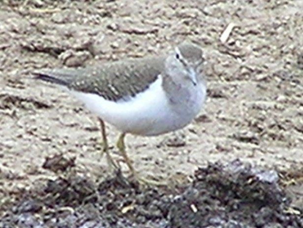
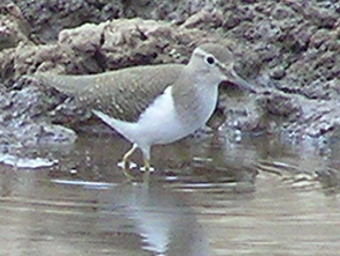
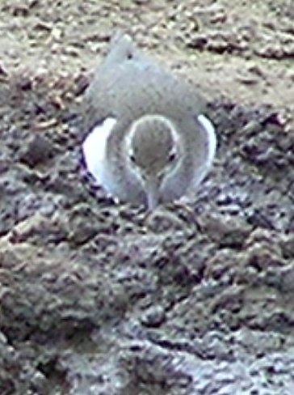
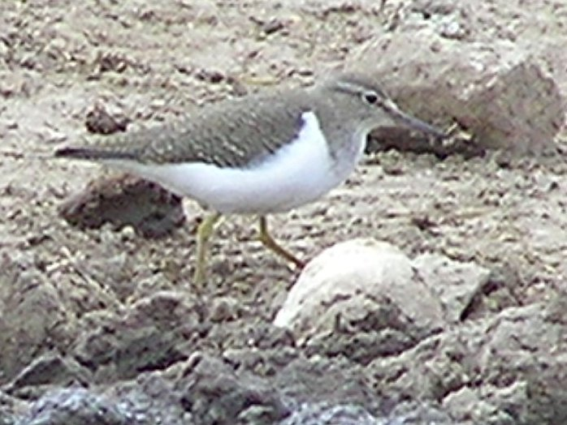
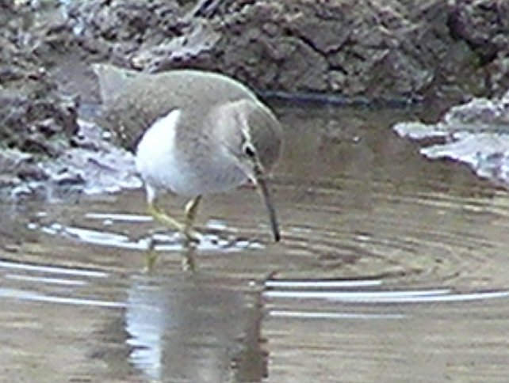

18-20cm.
|  |  |  |
|  |  |
This is a Paleartic migrant present in our area from August to April.
These photos were taken in very bright light, when it was difficult to perceive colours. It may be that the colours in the fifth picture are more accurate. This is a yellow legged species, smaller and with a more active jizz than the following species. It appears 'hunched' when it moves.